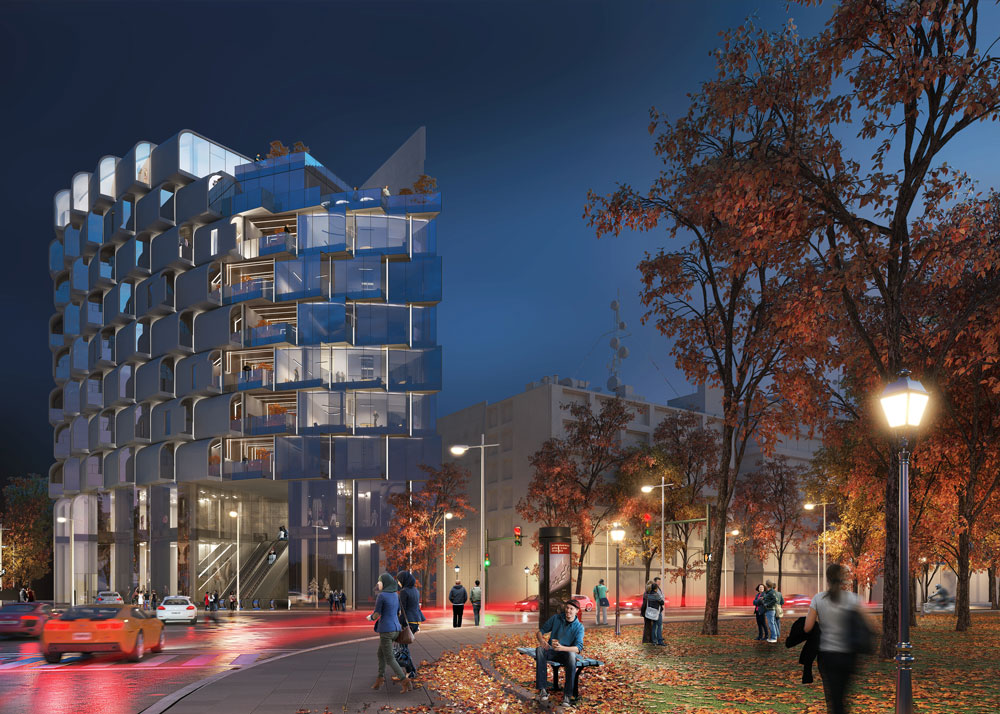
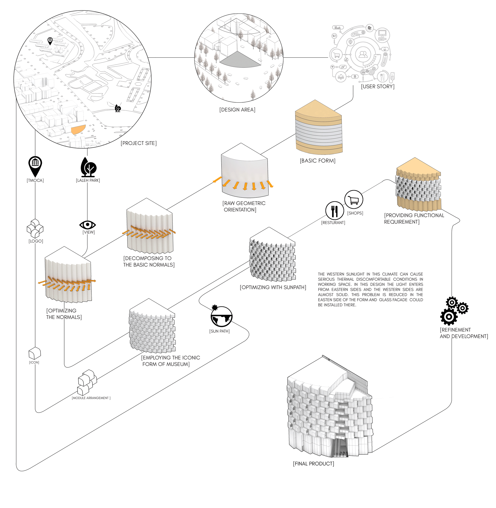
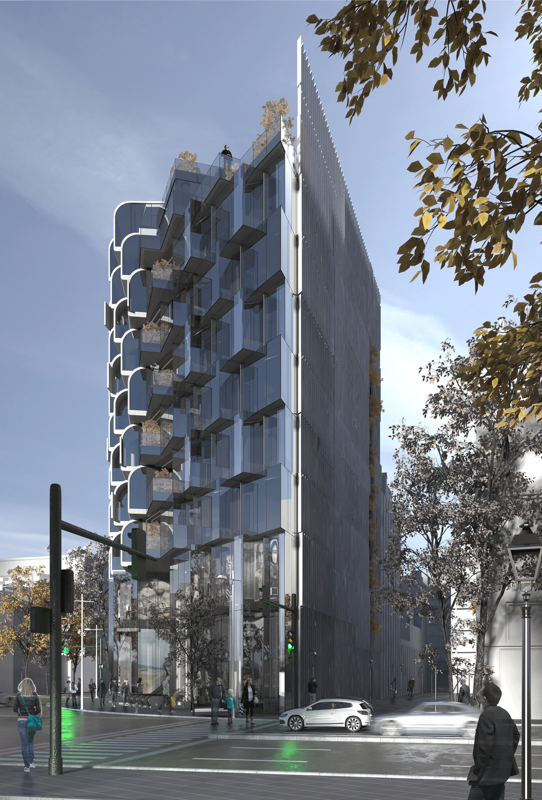
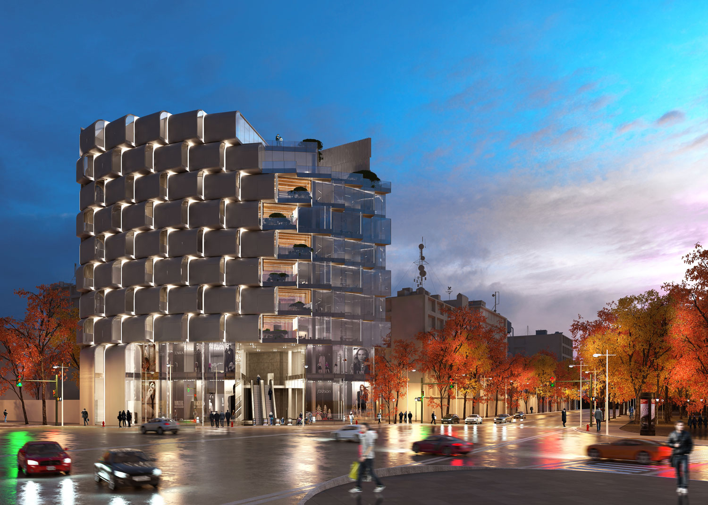
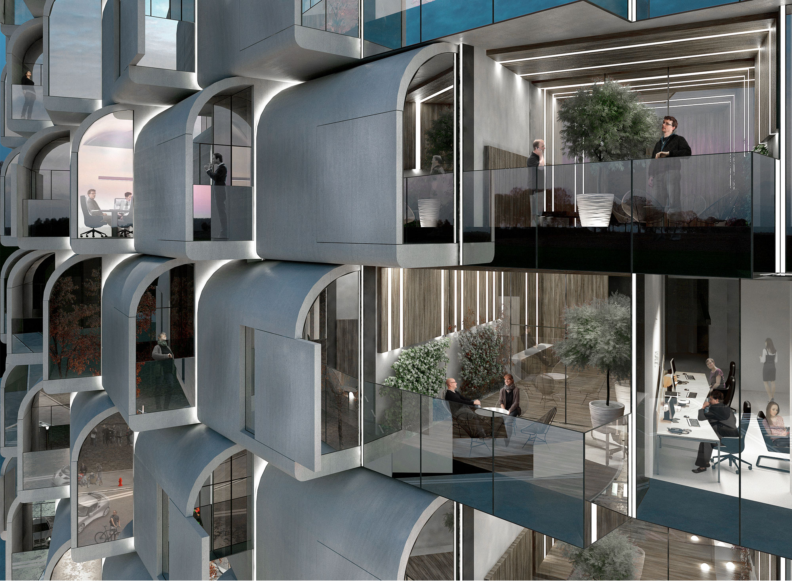

The design site is located in front of the western side of Laleh park. This is such an opportunity for a building in the case of providing natural landscape view. However it is mostly faced to the intersection of the main streets. This design is faced with the contrast of the good view and the bad building orientation. This problem is solved with a simple modular arrangements of forms inspired by the iconic form of Tehran contemporary museum of arts.
Design Process

There are some architecturally valuable buildings in every city with civilized background. These buildings might be either historic or contemporary. However they have a great cultural value in their context. This value could be employed by local architects to design and form their building in order to create a city with harmony in the form of buildings. In this design it is called architecture cultural hub. This hub could define architectural identity of a neighborhood. In this project the formal identity of “Tehran museum of contemporary arts” which is almost 250 meters far from the design site is employed as the basic element of form finding.


Having open space and fresh air is an advantage for any space in which people live or work. A building with a quality open space might cause boosting the efficiency of the occupants. In this design the open space is defined in two separate categories. One is defined as “single person terrace” for short minute breaks like open air breathing or smoking. Every office has one of them. The other one is defined as “refresh zone” for long time breaks like meeting a friend, drinking coffee or speaking to long time phone calls. This type is the common semi-open space existing in every official story. It provides social communication between neighbors which results social sustainability.
